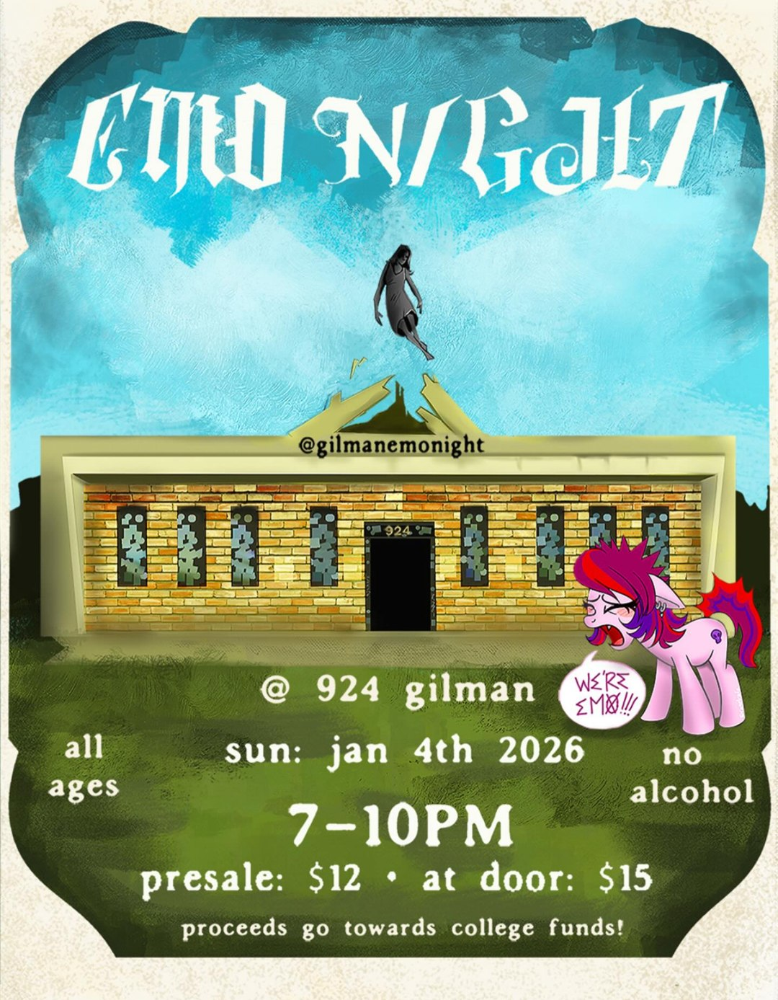

Emo Night at 924 Gilman
A show campaign for Emo Night at 924 Gilman, the all-ages music venue in Berkeley.

About the project
Over three months, the paid Instagram posts promoting upcoming shows got more expensive and less effective.
I tracked the numbers, found out why, and helped fix it with a campaign made for one kind of fan: Emo Night.
~2×rise in cost per click, caught early
1,400+likes on the Emo Night post
100+people at the show
A few words used on this page:
- Cost per click
- How much is paid each time someone clicks a paid post. Lower is better. Also called "CPC."
- Audience saturation
- When the same people see the same kind of post so often that they stop clicking. Each click then costs more.
- Engagement
- How much people interact with a post: likes, comments, shares and saves.
- KPI
- A number used to check whether something is working, like clicks or tickets sold. Short for "key performance indicator."
- Dashboard
- One place that shows all the key numbers at a glance.
- Pivot table
- An Excel tool that sums up many rows into a short table, like total clicks by month.
- VLOOKUP
- An Excel formula that pulls matching information from one table into another.
- Genre-specific
- Made for fans of one music style, like emo, instead of for everyone.
What I did
- Built an Excel dashboard that put the social media numbers and the show numbers in one place
- Used pivot tables and VLOOKUP to pull the data together
- Tracked cost per click over three months
- Spotted that the audience was getting tired of the same posts
- Recommended switching from general schedule posts to posts made for each show's music style
- Designed the Emo Night campaign
What I found
The short version: people were tired of seeing the same kind of post.
- Cost per click nearly doubled in three months, from about 8 cents to about 15 cents ($0.076 to $0.146)
- The general schedule posts kept reaching the same people, who clicked less and less
- That's audience saturation: the posts weren't wrong, people had just seen too many like them
What I recommended
- Rely less on general schedule posts
- Promote each show to fans of its music style, with its own look and message
- Start with Emo Night, made for emo fans
The result
Lowercost per click after the switch
1,400+likes on the Emo Night post
100+people at the show
Posts made for one music style cost less per click and got more people engaging. The Emo Night post got over 1,400 likes, and more than 100 people came to the show.